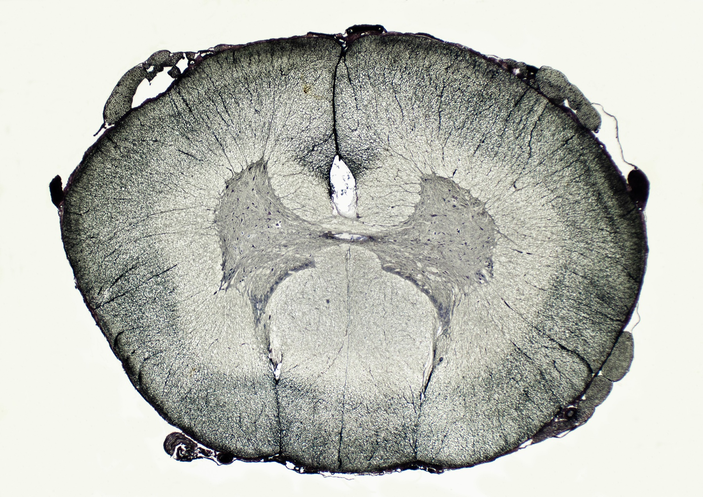

Página 4 · E7
Quatro estruturas, uma força
“AVE, tumor e TRM ‘parecem’ a mesma fraqueza — por quê?”
A cadeia de quatro
Quatro estruturas em cadeia dinâmica geram força: (1) 1º neurônio motor; (2) 2º neurônio motor; (3) placa motora; (4) músculo.
O 1º NMS é o neurônio motor voluntário cujo corpo está no córtex motor frontal. O comando (“levanta o braço”) sai pelo axônio: coroa radiada → cápsula interna → mesencéfalo → ponte → bulbo. No bulbo ocorre o cruzamento nas pirâmides (decussação das pirâmides). Depois, o 1º faz sinapse com o 2º NMS, cujo corpo está na coluna anterior da medula (ponta anterior do “H” cinzento).
O 2º propaga o estímulo pelo seu axônio — e esse axônio é o nervo motor periférico. Exemplo craniano: nervo facial — mímica (piscar, testa, sorriso) é motricidade do 2º NMS facial.
Entre o 2º e o músculo: placa motora. A ponta do axônio libera acetilcolina (ACh), que atravessa a fenda, liga-se a receptores musculares, abre canais, despolariza e contrai. Sem placa funcionante, o estímulo não recruta o músculo.
O músculo é a última peça: sem massa/função adequada, não há força — mesmo com neurônios e placa íntegros. Analogia: o marombeiro levanta cinco sacolas e o estudante uma não porque tem mais 2º NMS ou mais placa, e sim porque tem mais músculo.
Denominador comum e exame diferente
Lesão em qualquer das quatro estruturas produz fraqueza. Apesar da fraqueza comum, o exame de cada topografia é clinicamente diferente — e é essa diferença que topografa a lesão.
Funil e regra do sítio
Funil diagnóstico: sindrômico → topográfico → etiológico. Mesmo sítio = mesma síndrome de fraqueza, independentemente da etiologia específica daquele sítio.
| Andar | Sítio | Exemplos etiológicos |
|---|---|---|
| 1º NMS | Córtex→trato piramidal→sinapse medular | AVE, TCE/hemorragia, tumor SNC, TRM |
| 2º NMS | Corno anterior / nervo motor | Neuropatias (DM, B12, trauma…) |
| Placa | Junção neuromuscular | Miastenia, botulismo… (MG até prova em contrário) |
| Músculo | Fibra muscular | Miosite (droga, viral, autoimune) |
Exemplo de porta: pé caído com clínica de 2º NMS → pensa-se em neuropatia periférica, não em TCE/AVE/tumor, nem em placa ou músculo — estreita o leque etiológico.

Toque um andar: a fraqueza é a mesma; o exame topografa o elo.
Quiz — fixação
-
Qual sequência descreve corretamente a cadeia da força?
Gabarito B. ordem causal do comando voluntário até a fibra.
demais permutam andares e quebram a fisiologia. memorização invertida a partir do sintoma (músculo primeiro).
-
AVE, tumor cerebral e TRM compartilham o mesmo padrão de fraqueza porque:
Gabarito B. mesmo sítio = mesma síndrome; etiologia vem depois.
A confunde sítio com causa; C/D são andares errados. lista de doenças em vez de mapa topográfico.
-
Pé caído com clínica de 2º NMS deve estreitar o pensamento para:
Gabarito B. clínica de 2º → leque do 2º (neuropatia), não 1º/placa/músculo.
A é 1º/central; C/D são outros andares. “pé caído = AVC” por associação popular.